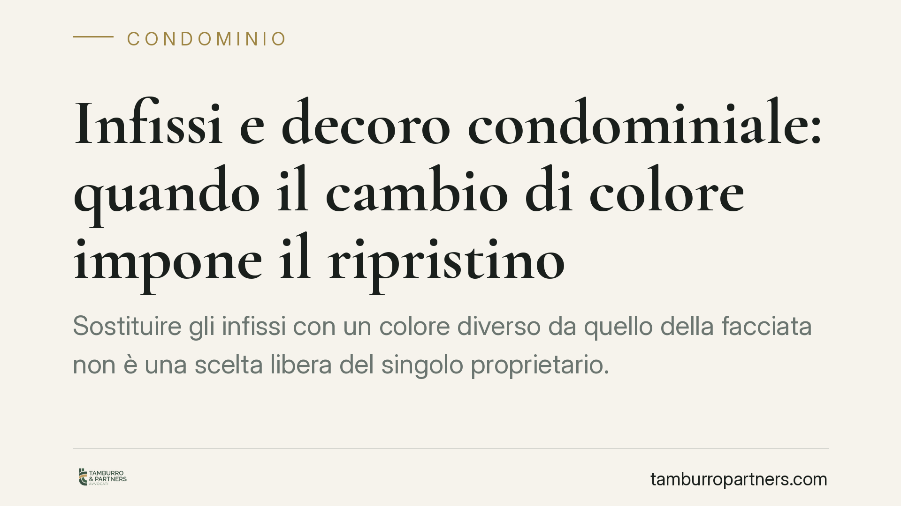

Infissi e decoro condominiale: quando il cambio di colore impone il ripristino
Sostituire gli infissi con un colore diverso da quello della facciata non è una scelta libera del singolo proprietario. Una recente pronuncia di merito ribadisce che l'alterazione cromatica può ledere il decoro architettonico dell'edificio e giustificare l'ordine di ripristino, senza che il degrado preesistente valga come giustificazione. Vediamo le regole applicabili e cosa rischia il condomino.

Il caso
Un condomino sostituisce gli infissi della propria unità scegliendo una colorazione diversa rispetto a quella uniforme della facciata. Un'altra condomina contesta l'intervento, lamentando la lesione del decoro architettonico dell'edificio. In giudizio interviene un consulente tecnico d'ufficio (CTU) per valutare l'impatto estetico della modifica.
La Corte d'appello di Firenze (sentenza n. 1906, i cui estremi completi di sezione e anno sono in corso di verifica) ha confermato che l'alterazione cromatica incide sul decoro e impone il ripristino dello stato precedente. In particolare, il giudice ha chiarito che il degrado preesistente dell'edificio non costituisce una "zona franca": uno stabile già deteriorato non autorizza ulteriori interventi peggiorativi dell'aspetto d'insieme.
> *Nota sulla fonte: gli estremi esatti della pronuncia (numero, anno, sezione) sono oggetto di verifica. In attesa di conferma, il principio è riportato in via divulgativa e non deve essere citato come precedente nei propri atti senza controllo della fonte ufficiale.*
Inquadramento normativo
Qui occorre distinguere con precisione le norme in gioco, perché è un punto spesso frainteso.
La sostituzione degli infissi riguarda, di regola, parti di proprietà esclusiva del singolo condomino. L'intervento è quindi disciplinato in via principale dall'art. 1122 c.c., che vieta al proprietario di eseguire opere sulle parti di proprietà o uso individuale quando ne derivi pregiudizio, tra l'altro, al decoro architettonico dell'edificio.
La nozione di decoro architettonico tutelata trova il suo aggancio nell'art. 1120, comma 4, c.c., che vieta le innovazioni lesive del decoro. Attenzione però: l'art. 1120 regola in senso proprio le innovazioni deliberate dall'assemblea, non le modifiche del singolo. Per la fattispecie del condomino che agisce individualmente sui propri infissi, la norma cardine resta l'art. 1122 c.c., che richiama a sua volta il bene-decoro protetto dal sistema.
Secondo costante giurisprudenza di legittimità, il decoro architettonico è l'estetica data dall'insieme delle linee e delle strutture che conferiscono all'edificio una sua fisionomia unitaria e armonica. La lesione non richiede il crollo del valore estetico: basta un'apprezzabile alterazione del quadro d'insieme, valutata in concreto.
Il profilo probatorio
Un aspetto decisivo, spesso trascurato, è l'onere della prova. Chi agisce lamentando la lesione del decoro deve dimostrare che la modifica ha prodotto un'alterazione estetica apprezzabile dell'edificio. Non basta la semplice difformità cromatica: va provato uno scostamento che incida sull'armonia complessiva.
Proprio per questo il giudizio è tecnico e in concreto. La CTU serve a misurare l'entità dello scostamento rispetto alla cromia originaria e alla sua percepibilità dall'esterno. Lo stato di degrado preesistente può entrare nella valutazione, ma — come confermato — non vale come esimente: non legittima nuovi peggioramenti.
Cosa cambia per il condomino
Per chi vive in condominio, il messaggio operativo è chiaro.
La libertà di intervenire sui propri infissi non è assoluta. Il colore degli esterni non è un dettaglio privato quando è visibile dalla facciata e concorre all'uniformità dell'edificio. Un intervento autonomo, anche se tecnicamente migliorativo sul piano funzionale, può esporre a un ordine di ripristino coatto, cioè all'obbligo di riportare gli infissi alla colorazione originaria a proprie spese, oltre alle spese di lite.
Il punto vale sia per chi sta pianificando lavori, sia per chi riceve una contestazione.
Cosa fare in concreto
- Prima dei lavori, verifica il regolamento condominiale e l'eventuale presenza di prescrizioni cromatiche o di una delibera assembleare sull'uniformità degli infissi.
- Documenta lo stato originario della facciata con fotografie datate, utili sia in caso di intervento sia in caso di contestazione.
- Scegli materiali e colori coerenti con l'aspetto d'insieme dell'edificio; se la cromia originaria non è più reperibile, individua la soluzione più prossima e conservane traccia scritta.
- In presenza di dubbi, sottoponi il progetto all'amministratore o all'assemblea prima di eseguire i lavori, così da acquisire un assenso tracciabile.
- In caso di contestazione già avviata, i margini di difesa dipendono da aspetti tecnici e dai tempi di reazione: è opportuna una valutazione tempestiva della posizione, anche sul piano probatorio.
---
*Contributo informativo a cura di Tamburro & Partners - Avv. Giuseppe Tamburro. Non costituisce parere legale.*
Ogni condominio ha una storia a sé.
Se gestisci un'amministrazione e vuoi un confronto su una specifica questione condominiale, scrivi allo studio. Ti rispondiamo entro un giorno lavorativo.